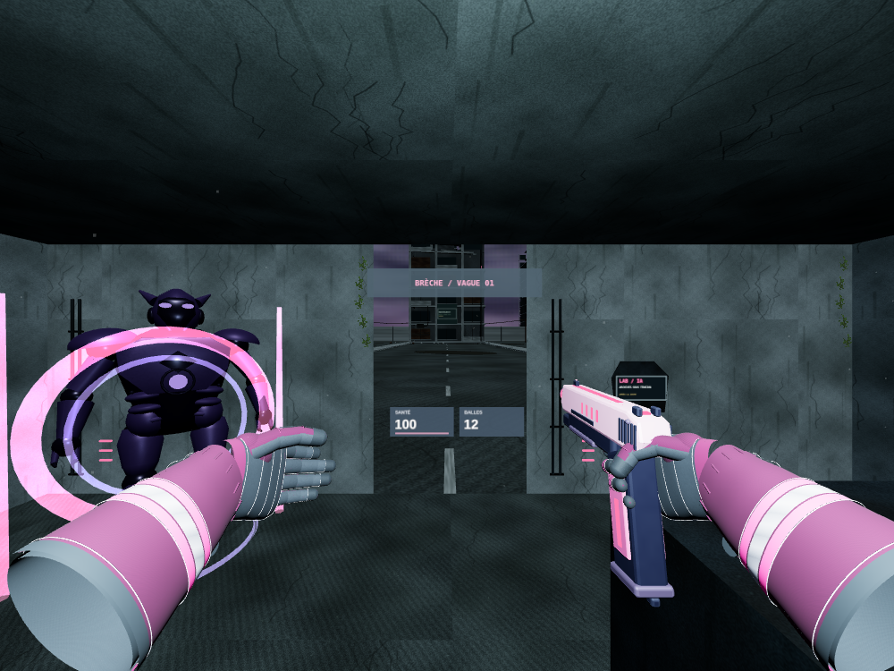

AT HOME transforme la pièce détectée en ancien laboratoire de l’IA : le sol, les murs, le plafond et les meubles reprennent les matériaux de Pink War. Les ruines de la mégapole prolongent les ouvertures. Des brèches annoncent les vagues, les machines avancent dans la pièce et les armes arrivent sur des socles. Le HUD garde la santé et les munitions.

AT HOME · laboratoire immersif
Rendu réel du jeu dans une pièce témoin en simulation WebXR. Géométrie de scan simulée, avec murs, plafond, sol et un meuble. X rend la maison visible en passthrough.
GHJU et LYLU retrouvent leur affichage après un changement de moteur graphique. Les robots résistent davantage et tirent des salves depuis des canons articulés. AURORA renvoie les projectiles au contact réel de la lame, inclinée vers l’avant en VR. La santé et les munitions restent dans le HUD ; seul le compteur sur l’arme est retiré.
GHJU · casque rose
Corps complet, animations et équipements RLH conservés sous l’armure AÉGIS. Rendu de vérification après passage WebGPU vers WebGL.
LYLU · casque bleu
L’avatar sélectionné reste visible à l’accueil et en troisième personne. Les données des squelettes restent compatibles avec les deux moteurs.
Voir plus loin.
BLOOM grossit ×2, LANCE ×4. Sur Quest, maintenez la gâchette libre et regardez dans la lentille. Sur PC et mobile, la visée zoome et devient plus fine. X et le bouton de saut au poignet restent disponibles. Captures en rendu logiciel, sans mesure de performances sur casque physique.
VR · une image dans la lentille
Le grossissement suit le canon et l’œil de la main de tir. La vue autour et les mouvements de tête restent naturels.
Ordinateur et tactile · ×2 / ×4
Maintenir la commande de visée agrandit la cible et affine les mouvements. Relâcher rétablit la vue normale.
AURORA et les déplacements
AURORA rejoint les cinq armes à distance : une lame rose pour GHJU, bleue pour LYLU, qui se déploie et éclaire son environnement. Les tirs ennemis anticipent les déplacements. Le double saut et le rebond mural offrent une nouvelle échappatoire. La santé et les munitions restent au premier plan dans un HUD réorganisé.
AURORA · une sixième arme
Maintenir la gâchette déploie la lame, avec lumière locale, sons originaux d’énergie et coups testés sur le passage réel de la lame. La lame peut intercepter et renvoyer un tir ; la visée facilite la parade.
VR · le poignet devient une commande
X saute, un second appui donne une nouvelle impulsion. Le bouton au poignet se sélectionne avec le rayon de la manette de tir. La lame suit les gestes réels.
La ville et ses machines
Vingt niveaux, des brèches réparties dans la ville, puis une survie facultative. Les tirs et les mouvements attirent les robots ; les murs étouffent les sons et marcher accroupi permet de rester discret. Les captures ci-dessous montrent les modèles et le rendu réels.
Les mains retrouvent la ville
Le suivi de poignée place les vrais gants RLH même si les événements de connexion manquent. Le ciel nocturne garde sa lune, avec des nuages plus structurés et des matériaux usés.
AT HOME · mêmes mains et armes
Le chargement asynchrone et les reconnexions sont pris en charge. Le scan du sol réel et l’occlusion de la pièce restent nécessaires pour combattre.
Traqueur E-06 · niveau 6
Ses capteurs acoustiques entendent plus loin. Il enquête sur la source du bruit et transmet une alerte aux unités proches.
Rempart B-11 · niveau 11
Plus lent, mais résistant au torse. Son capteur de tête reste vulnérable. Les plaques suivent ses propres articulations.
LYLU et GHJU gardent le corps, le casque fermé, le masque et les mains du pompier RLH. Les protections originales AÉGIS s’ajoutent aux vêtements : des lignes militaires épurées, des plaques indépendantes et des articulations libres. Le bleu et le rose les distinguent toujours.
GHJU · première protection
Au niveau 1, le plastron et les épaulières protègent la tenue de secours. Le masque et les vêtements restent reconnaissables.
LYLU · équipement avancé
Au niveau 10, les avant-bras, cuisses, genoux et tibias reçoivent leurs propres plaques. Le casque reste bleu. Idle Rifle et Rifle Walk utilisent le squelette RLH.
BLOOM · viseur et lumière
La gâchette gauche vise, la droite tire. Les décharges éclairent brièvement l’arme et le décor ; les impacts ajoutent leur propre impulsion lumineuse.
LANCE · sniper photonique
Il remplace l’arme à dispersion : un projectile précis par pression, cinq cellules et une recharge verticale avec A en VR. Hors casque, sa lunette resserre la vue.
Le périmètre possède désormais quatre murs continus, avec des collisions correspondant aux surfaces visibles. Autour de l’arène : 64 bâtiments à étages, avec façades endommagées, retraits, vitrages et installations techniques. Les passerelles, les escaliers et les ascenseurs existants restent en service.
Captures du rendu réel local dans Chromium, avec résolution réduite pour le rendu logiciel. Les commandes Quest sont vérifiées par simulation WebXR ; cette étape ne mesure pas les performances d’un casque physique.